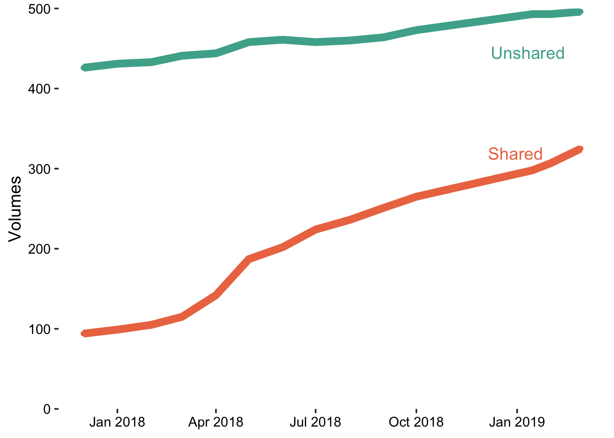
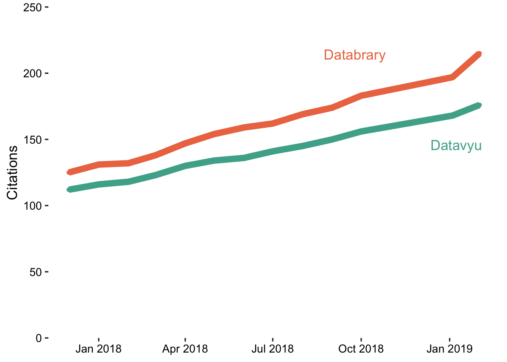

The volumes data can also be rewritten back to Databrary at some future date.
old_vols <- read_csv("csv/db-volumes-monthly.csv")
# Update
updated_vols <- old_vols
next_entry <- dim(updated_vols)[1] + 1
updated_vols[next_entry,] = NA
updated_vols$date[next_entry] <- new_stats$date
updated_vols$shared_volumes[next_entry] <- new_stats$datasets.shared
updated_vols$unshared_volumes[next_entry] <-
new_stats$datasets.total - new_stats$datasets.sharedupdated_vols <- updated_vols %>%
gather(., key = "type", value = "count", -date)
# Plot
vols_plot <- updated_vols %>%
ggplot(., aes(x = date, y = count, color = type, group = type)) +
geom_point() +
geom_line(size=3) +
theme_classic(base_size = 14) + #Axis Label Size
scale_colour_manual(values=c("#ec7751", "#4CAE99")) + #Saturated Databrary Colors
ylab("Volumes") +
#xlab("Year") +
#labs(title="Databrary Citation Growth") +
theme(axis.title.x=element_blank()) +
theme(legend.position="none", axis.text = element_text(size = rel(0.8), colour = "black")) + #Axis text size and color
theme(axis.line = element_blank()) +
scale_y_continuous(breaks = seq(0, 500, 100), expand = c(0,0)) +
coord_cartesian(ylim = c(0, 500))
ggdraw(vols_plot) +
draw_label("Unshared", colour = "#4CAE99", .86, .88) +
draw_label("Shared", colour = "#ec7751", .84, .65)
This section will eventually update and show the citation counts for Databrary and Datavyu. For now, it just shows the stored data file that we update manually. This can be automated, we just have to write a function to parse the HTML returned from Google Scholar to pull the relevant data.
citations <- read_csv("csv/citations-monthly.csv")
citations <- citations %>%
gather(., key = "type", value = "count", -date)
# Plot
citations_plot <-
citations %>%
ggplot(., aes(x = date, y = count, color = type, group = type)) +
geom_point() +
geom_line(size=3) +
theme_classic(base_size = 14) + #Axis Label Size
scale_colour_manual(values=c("#ec7751", "#4CAE99")) + #Saturated Databrary Colors
ylab("Citations") +
#xlab("Year") +
#labs(title="Databrary Citation Growth") +
theme(axis.title.x=element_blank()) +
theme(legend.position="none", axis.text = element_text(size = rel(0.8), colour = "black")) + #Axis text size and color
theme(axis.line = element_blank()) +
scale_y_continuous(breaks = seq(0, 250, 50), expand = c(0,0)) +
coord_cartesian(ylim = c(0, 250))
ggdraw(citations_plot) +
draw_label("Datavyu", colour = "#4CAE99", .9, .6) +
draw_label("Databrary", colour = "#ec7751", .7, .85)
# List files with metadata
csv_files <- list.files(path = "csv", pattern = "vol_", full.names = TRUE)
# Extract vector of volume numbers, determine the maximum
vol_nums <- stringr::str_match(csv_files, pattern = "_([0-9]+)\\.")
vol_ids <- as.numeric(vol_nums[,2])
last_vol <- max(vol_ids)
vols_to_test <- params$vols_to_test
# Create function to write new data files for each volum
write_vid_csv <- function(vol.id = 1) {
message(paste0("Getting data for volume ", vol.id))
vid_dat <- get_video_stats(vol.id)
# This .Rmd file is already in working/
if (!is.null(vid_dat)) {
write.csv(vid_dat, file = paste0("csv/vol_", vol.id, ".csv"),
row.names = FALSE)
}
} lapply(last_vol:(last_vol + vols_to_test), write_vid_csv)## [[1]]
## NULL
##
## [[2]]
## NULL
##
## [[3]]
## NULL
##
## [[4]]
## NULL
##
## [[5]]
## NULL
##
## [[6]]
## NULL
##
## [[7]]
## NULL
##
## [[8]]
## NULL
##
## [[9]]
## NULL
##
## [[10]]
## NULL
##
## [[11]]
## NULLvol_files <- list.files("csv", pattern = "vol_[0-9]+", full.names = TRUE)
# Import the individual csv files
video_data <- lapply(vol_files, read_csv)
video_stats <- Reduce(function(x,y) merge(x, y, all = TRUE), video_data)The median number of videos per volume is 16 with a range of [1, 4368].
vols <- video_stats$vol_id
vol_info <- lapply(vols, list_volume_metadata)
vols_data <- Reduce(function(x,y) merge(x, y, all = TRUE), vol_info)
vols_joined <- dplyr::left_join(vols_data, video_stats, by = c("vol_id" = "vol_id"))There are 119 volumes with DOIs (shared) that have sessions and at least one video as of today (2019-02-28 17:04:16).